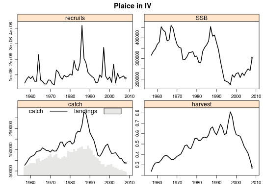
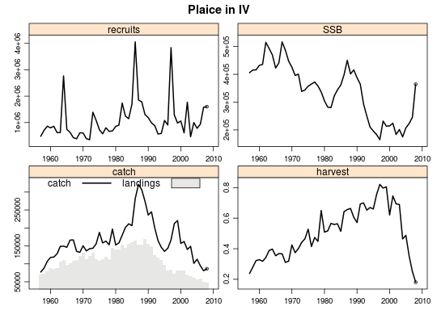
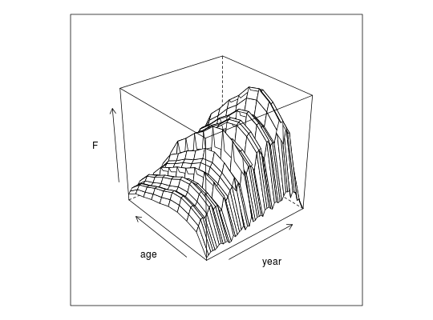
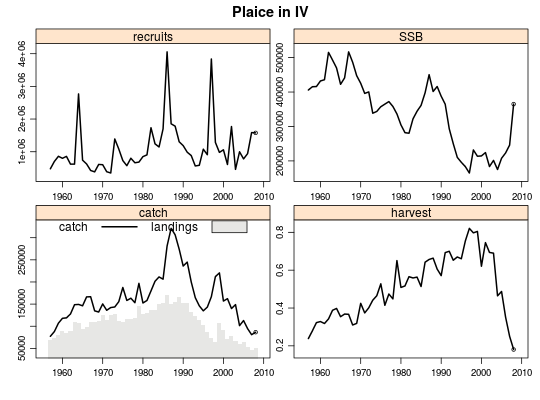
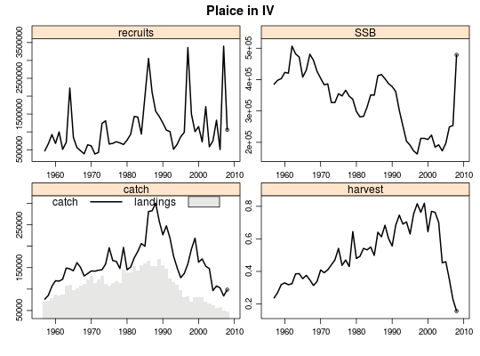

User interface to the statistical catch-at-age method of the a4a stock assessment framework.
sca(stock, indices, ...) # S4 method for FLStock,FLIndex sca(stock, indices, ...) # S4 method for FLStock,FLIndices sca(stock, indices, fmodel, qmodel, srmodel = ~factor(year), fit = "MP", mcmc = missing)
FLStock objectFLIndices objectSCAMCMC object with the arguments to run MCMCan a4aFit or a4aFitSA object with the fit results.
This method is the simple method for stock assessment. Some arguments are not accessible to make it simpler for the user. The advanced method is a4aSCA. In particular, the default for the fit argument is 'MP'. For detailed information about using the sca read the vignette 'The a4a Stock Assessment Modelling Framework' (vignette('sca')).
data(ple4) data(ple4.index) # fit using the default submodels fit1 <- sca(ple4, FLIndices(ple4.index)) plot(ple4 + fit1)# see default submodels (set through automated procedure) sca(ple4, FLIndices(ple4.index), fit='assessment')#> a4a model fit for: Plaice in IV #> #> Call: #> .local(stock = stock, indices = indices, fmodel = ..1, qmodel = ..2, #> srmodel = ..3, n1model = ..4, vmodel = ..5, fit = ..6) #> #> Time used: #> Pre-processing Running a4a Post-processing Total #> 0.3377771 2.8992119 0.0989790 3.3359680 #> #> Submodels: #> fmodel: ~te(age, year, k = c(4, 26), bs = "tp") + s(age, k = 8) #> srmodel: ~factor(year) #> n1model: ~factor(age) #> qmodel: #> BTS-Isis: ~s(age, k = 5) #> vmodel: #> catch: ~s(age, k = 3) #> BTS-Isis: ~1# fishing mortality by age and year (separable) fit2 <- sca(ple4, FLIndices(ple4.index), fmodel=~factor(age) + factor(year)) plot(ple4 + fit2)wireframe(data~year*age, data=harvest(fit2), zlab="F")# fit2 + catcability as a smoother by age without year trend fmod <- ~factor(age) + factor(year) qmod <- list(~s(age, k=4)) fit3 <- sca(ple4, FLIndices(ple4.index), fmodel=fmod, qmodel=qmod) plot(ple4 + fit3)# fit3 + srmodel as a smoother by year fmod <- ~factor(age) + factor(year) qmod <- list(~s(age, k=4)) srmod <- ~s(year, k=45) fit4 <- sca(ple4, FLIndices(ple4.index), fmodel=fmod, qmodel=qmod, srmodel=srmod) plot(ple4 + fit4)AIC(fit1, fit2, fit3, fit4)#> df AIC #> fit1 178 200.5728 #> fit2 131 255.7221 #> fit3 130 254.6063 #> fit4 123 508.3260BIC(fit1, fit2, fit3, fit4)#> df BIC #> fit1 178 1013.1900 #> fit2 131 853.7718 #> fit3 130 848.0908 #> fit4 123 1069.8536